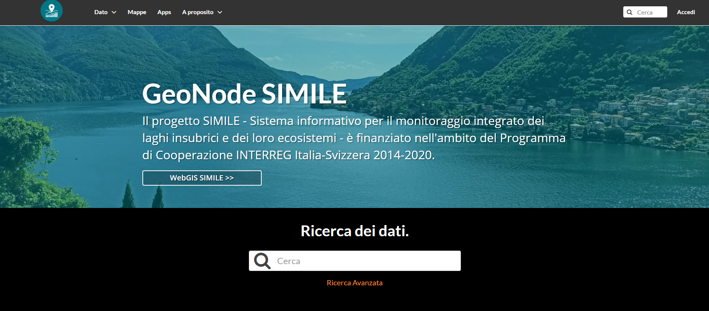
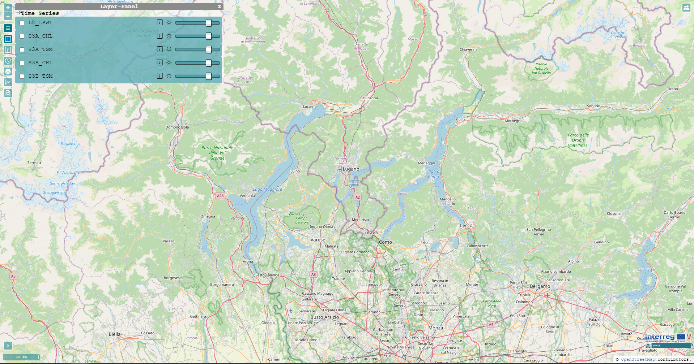

Water Quality Monitoring of the Insubric Lakes
Contents
Water Quality Monitoring of the Insubric Lakes#
Pressures on water availability and quality increased over the years due to demands on ecosystems, such as those caused by climate change or human activity. The water management regulations issue must be addressed at numerous levels by various institutions, authorities, and communities (from policymaking to day-to-day citizen activities). Communication, collaboration, and data exchange are essential to conserving water resources.
The interactive presentation of water quality indicators and models through the internet has proven to be an excellent method for managing and monitoring water resources, involving the public and raising awareness ([1]). In this work, we describe the design and implementation of a cooperative web platform for disseminating remote sensing-based maps (i.e., maps of water quality indicators) created for the SIMILE project (“Integrated monitoring system for knowledge, protection and valorisation of the subalpine lakes and their ecosystems”; [2]).
SIMILE’s GeoNode#
{kind=link}

Fig. 1 GeoNode SIMILE - Welcome page#
SIMILE’s WebGIS#
{kind=link}

Fig. 2 WebGIS SIMILE - Welcome page#
See also
- 1
C. Arias Muñoz, M. A. Brovelli, C. E. Kilsedar, R. Moreno-Sanchez, and D. Oxoli. Web mapping architectures based on open specifications and free and open source software in the water domain. ISPRS Annals of the Photogrammetry, Remote Sensing and Spatial Information Sciences, IV-2/W4:23–30, 2017. URL: https://www.isprs-ann-photogramm-remote-sens-spatial-inf-sci.net/IV-2-W4/23/2017/, doi:10.5194/isprs-annals-IV-2-W4-23-2017.
- 2
M. A. Brovelli, M. Cannata, and M. Rogora. Simile, a geospatial enabler of the monitoring of sustainable development goal 6 (ensure availability and sustainability of water for all). The International Archives of the Photogrammetry, Remote Sensing and Spatial Information Sciences, XLII-4/W20:3–10, 2019. URL: https://www.int-arch-photogramm-remote-sens-spatial-inf-sci.net/XLII-4-W20/3/2019/, doi:10.5194/isprs-archives-XLII-4-W20-3-2019.